景点选择
- 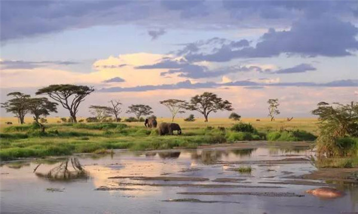 坦桑尼亚 如果今生只能体验一次自然，我选择非洲； 如果今生只去一次非洲，那必须是：坦桑尼亚！ 说起坦桑尼亚，首先进入脑海的应该就是那些生活在广袤无垠的东非大草原上自由自在的野生动物吧 ，草原上飞奔的斑马、河流里推搡的河马，还有在路上溅起尘土的庞大非洲象、挂在树上荡来荡去的黑猩猩......,东非草原自由驰骋塞伦盖蒂的壮阔，用一切语言形容皆会词穷，因动物一年一度大迁徙而闻名，六百万动物的脚印，将会留在这开阔的平原上，奔腾的角马群就如同东非大地的动脉，讲述着生命的壮烈。耳畔才听到密集的蹄声，转瞬间成千上万的角马就呼啸着飞奔而过，我们将在专业向导的带领下，坐着陆地巡洋舰，亲眼见证大自然最伟大的戏剧，在这神奇的土体上演。火山口边缘看自然奇观惊人的，难以置信的，令人窒息的……它们都适用于恩戈罗恩戈罗火山口那令人惊叹的景观。但就算上面的风光是如此地美妙，当你下到火山口底部，在无比密集的野生动物之间驱车穿梭，才算真正开始见识它的魔力。
- 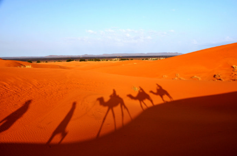 撒哈拉沙漠（Sahara Desert） “撒哈拉”这个名称来源于阿拉伯语الصحراء，是从当地游牧民族图阿雷格人的语言撒哈拉沙漠撒哈拉沙漠引入的，在其语言中就是“沙漠”的意思。这块沙漠大约形成于250万年以前。在上一个冰河时期，撒哈拉还不是一个沙漠，气候类似于东非，在沙漠地带发现了大约有3万幅古代的岩画，其中有一半左右在阿尔及利亚南部的恩阿杰尔高原，描绘的都是河流中的动物，如鳄鱼等。同时也发现过恐龙的化石。但撒哈拉自从公元前3000年起，除了尼罗河谷和分散在沙漠中的绿洲附近，已经几乎没有大面积的植被存在了。
- 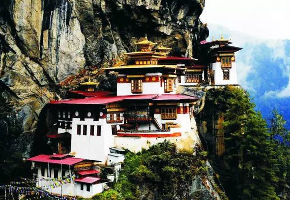 不丹：世界上最幸福的国度 她像是孤悬在喜马拉雅山上的一朵迷云，更像是陶渊明笔下的世外桃源，让人无法不为她的美丽折服。如果说世间还有一块真正的“人间乐园”，一个超然于物欲之上的“香格里拉”，那一定就是不丹！她像是孤悬在喜马拉雅山上的一朵迷云，更像是陶渊明笔下的世外桃源，让人无法不为她的美丽折服。 在这个离天空最近，离尘土最远的国度，不丹人民用清澈的眼睛，灿烂的笑脸诠释了快乐、知足和幸福！
- 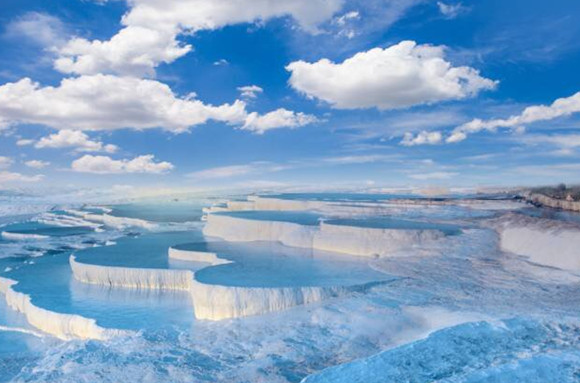 埃及 传说中，以美貌著称的埃及艳后每年都要抽时间来此泡温泉。当然她都不是一个人来，早先是恺撒大帝，后来是安东尼大将。童话般的棉花堡是她和情人缠绵的爱巢，在这里，她可以暂时忘却政治纷争中的烦忧。棉花堡是土耳其最不同寻常的瑰宝之一。上千年的天然温泉汇成大大小小的雪池，成层叠状下降，从高低不同的地方闪烁着万千波光，溢满诗意。一排排碟状岩石好似棉花一样的山丘，白色的岩浆覆盖了整个山坡，宛若坠入云端，闯入鬼斧神工的梦幻仙境。
- 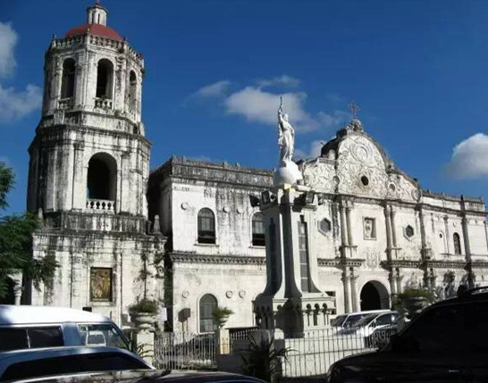 东南亚 它被誉为“海上乌托邦”，它是每个沙滩爱好者的梦想之地，它一度成为好莱坞人间天堂的代名词，它更被誉为本国最后一块生态处女地，它被全球知名旅游杂志《漫游》评选为全球10大最佳岛屿第一名，被Lonely Planet评选为2013年最佳旅游目的地。 它就是离中国最近的跳岛游目的地——菲律宾。
- 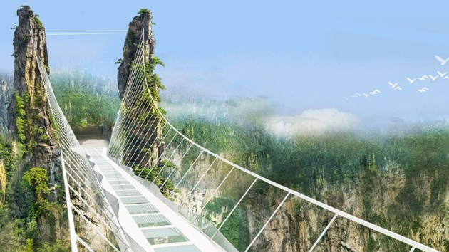 张家界核心景区 金鞭溪：主要景点：短命泉-文星岩-双龟探溪-千里相会，谜魂台，拜仙台，九天旋梯，小洞天，连心桥。 杨家界:一步登天，空中走廊，三大鬼门关，天波俯。 天子山：大观台-神鸡啄食-一步难行-天子座-仙人桥-天子峰等。 去十里画廊：一路景点有猴王撩哨，寿星迎宾，食指峰，全家福，九搁转层楼，采药老人，黄昏恋人，三姐妹峰
- 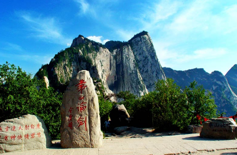 五岳之西岳华山 华山山脉是深成侵入岩体的花岗岩浑然巨石，顶部是粗粒（粒径5毫米）斑状花岗岩；中部是中粒（粒径2—5毫米）花岗河长岩及片麻状花岗岩。据地质科学工作者用放射性同位素测定，华山花岗岩形成期距今约12100万年左右，华山山脉地区的地壳发生活动，在受挤压、褶皱和破裂的过程中，岩浆开始沿着裂缝向表层地壳上升侵入，在3—6千米深处冷却，凝结成岩。
- 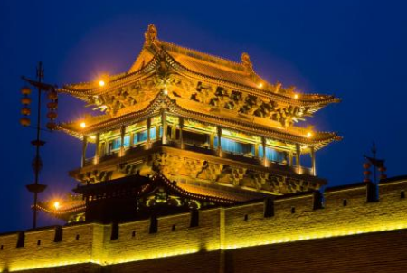 平遥古城 历史文化古城、世界文化遗产、5A风景区。 1986年，平遥县为第二批中国历史文化名城，平遥古城是中国四大古城之一。1997年12月，中国仅有的以整座古城申报世界文化遗产获得成功的两座古县城之一。2005年，平遥国际摄影大展被国际节庆协会（IFEA）评为“中国最具国际影响力的十大节庆活动”。2006年4月9日，《环球时报》评选平遥为“中国最值得外国人去的50个地方”之一。至现在2006年4月9日，《环球时报》评选平遥为“中国最值得外国人去的50个地方”之一。
- 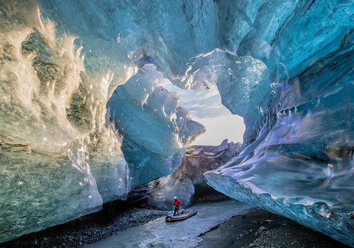 冰岛：“冰与火之歌” 第一天 北京-哥本哈根航班起飞前三小时，于北京首都机场集合，乘国际航班飞往有丹麦首都哥本哈根，抵达后专人接机，安排晚餐后送入住酒店休息。第二天 哥本哈根-欧登塞行走在400万升海水里是什么感觉？位于丹麦哥本哈根的“蓝色星球”水族馆可以给你答案。 除了众多特有的水生动物，别忘了去跟爱卖萌的明星海獭打招呼。第三天 欧登塞-比隆早餐后我们将先造访【安徒生的故居】。在这里将会看到安徒生70年生涯的书稿、信笺、日记。最后一天：作为去冰岛旅游的必游线路，黄金圈包含了冰岛的三个著名景点：大间歇泉、议会旧址和黄金瀑布，这些景点散布在一条环形的公路上，因此被称为旅游黄金圈。
- 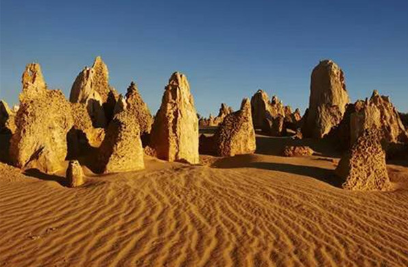 澳大利亚 西澳大利亚，顾名思义，即位于澳洲大陆西部的区域。西澳大利亚濒临印度洋，面积约为264万平方公里，相当于整个西欧。西澳大利亚州是澳大利亚联邦最大的州，是澳大利亚最富有原始自然景观的一个州，是最能领略澳大利亚风情的一个州，也是澳大利亚最富裕的一个州。在这里人们可以享受美食，与鲸鱼一起潜水，同野生海豚共游，在原始森林中漫步，在海滩上看着宁静的日落，在沙漠中伴着漫天繁星入睡......
- 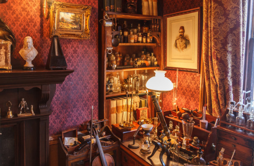 福尔摩斯博物馆 这所房子最初建于1815年。小说中的福尔摩斯于1881－1902年间居住于此。1990年，正式建立了这个在世界上也许是独一无二的博物馆。博物馆的结构与小说中完全相同，加上精心的布置，使来此参观的人如同置身于小说的场景之中 。口叼烟斗，总是带着一顶猎帽的福尔摩斯，在阿瑟·柯南·道尔（Sir Arthur Conan Doyle）笔下成为闻名全球的名侦探，小说中福尔摩斯和华生住在贝克街221B的二楼，前方是他们共用的书房，后端则是福尔摩斯的卧室，书房。博物馆三楼则呈现不同小说中的知名场景，等福尔摩斯迷来细细比对。小说中福尔摩斯的房东是韩德森太太（Mrs. Hudson）。事实上，地铁贝克街站的墙上满是福尔摩斯的经典侧面像瓷砖，博物馆隔壁也有福尔摩斯纪念品店。
- 洛阳牡丹 （中国名花） 洛阳牡丹，“唯有牡丹真国色，花开时节动京城”，为多年生落叶小灌木。洛阳是十三朝古都，有“千年帝都，牡丹花城”的美誉。“洛阳地脉花最宜，牡丹尤为天下奇。”其栽培始于隋，鼎盛于唐，宋时甲于天下。它雍容华贵、国色天香、富丽堂皇，寓意吉祥富贵、繁荣昌盛，是华夏民族兴旺发达、美好幸福的象征。洛阳牡丹花朵硕大，品种繁多，花色奇绝，有红、白、粉、黄、紫、蓝、绿、黑及复色9大色系、10种花型、1000多个品种。花开时节，洛阳城花海人潮，竞睹牡丹倩姿芳容。
- 上一页
- 1
- 2
- 下一页